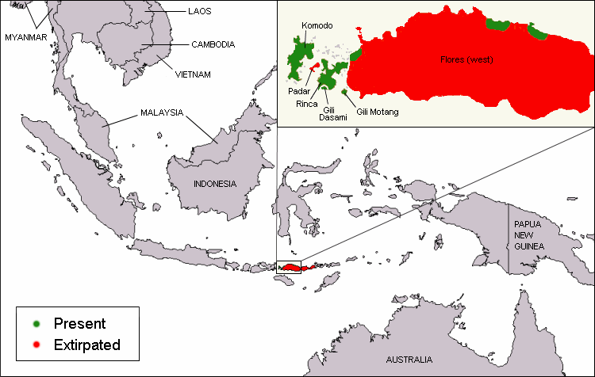
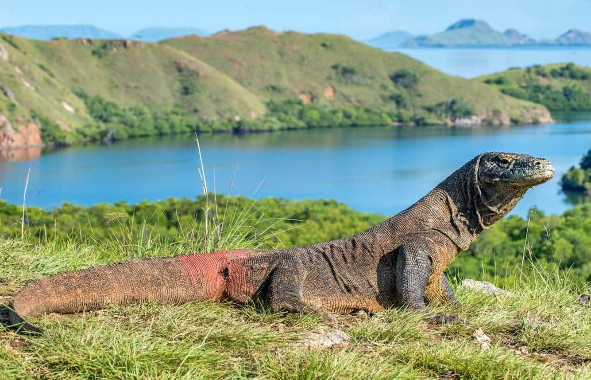
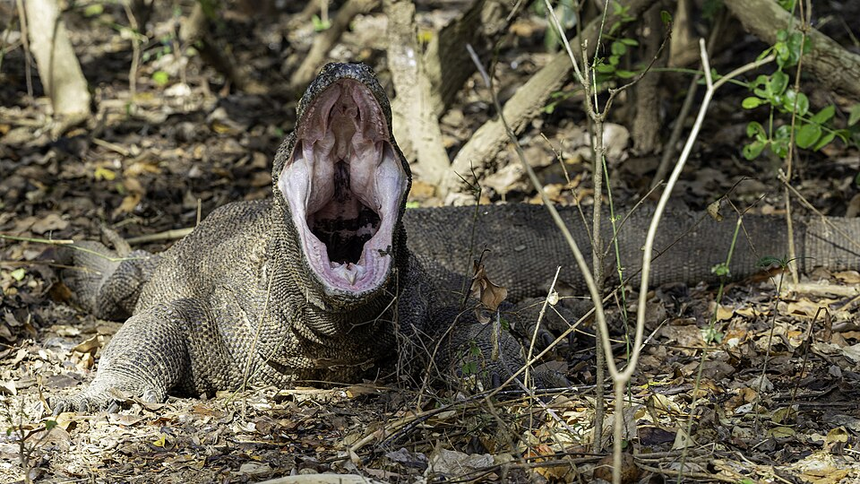

Common Name: Komodo Dragon (Varanus komodoensis) Status: Vulnerable
Scientific Classification
| Kingdom: | Animalia |
|---|---|
| Phylum: | Chordata |
| Class: | Reptilia |
| Order: | Squamata |
| Suborder: | Anguimorpha |
| Family: | Varanidae |
| Genus: | Varanus |
| Species: | V. komodoesnsis |
Size Range/Identification
The Komodo dragon is one of the largest living lizards in the world. They usually weigh 154 pounds and can grow to be about 10.3 feet. Males are usually bulkier than females.1
They’re large lizards with long tails, strong and agile necks, and sturdy limbs. They have yellow tongues which are also forked. Adults are usually a stone color with large scales, while juveniles can have a more vibrant color and pattern.1
Habitat/Geology
Komodo dragons are usually limited to a few Indonesian islands of the Lesser Sunda group, which includes Rintja, Padar, Flores, and the island of Komodo. They usually live in tropical savanna forests but can range widely over the islands.1

Ecology/Behavior
They’re able to eat almost any kind of meat, usually scavenging for carcasses or stalking animals from small rodents to large water buffalo.1 To escape the heat, they usually hide out in burrows at night.1 Large Komodos will often cannibalize young ones, so the young will often roll around in feces which gives off a scent that large komodos naturally avoid. Young komodos will also undergo rituals of appeasement, with the smaller lizards pacing around a feeding circle in a ritualized walk. With their tails stuck straight out and throwing their body side to side.1 It’s hard to figure out a Komodo's gender, the only way to tell is by looking at the scales close by the cloaca. They usually mate between May and August, dominant males will compete for females in ritual combat. With the loser running away or remaining motionless. Females will often lay about 30 eggs in depressions dug on hill slopes. The eggs usually incubate in the nests for nine months, however after that, there isn’t really any evidence for parental care for newly hatched Komodo dragons.1 Komodo’s usually use physical cues to communicate such as their tails, mouths, backs, etc. Sometimes they also use their scent to mark territory or such.1 They can live about 30 years in the wild, however scientists are still studying their life cycles.1 They have no natural predators as they’re on the top of the food chain.1


References
- Wikipedia: Red Wolf
Wikipedia Contributors. (2019, November 21). Red wolf. Wikipedia; Wikimedia Foundation. https://en.wikipedia.org/wiki/Red_wolf
- Red Wolf Animal Facts - Canis rufus
A-Z-Animals.com. (2019). Red Wolf. A-Z-Animals.Com. https://a-z-animals.com/animals/red-wolf/
- Wikipedia: Komodo Dragon
Wikipedia Contributors. (2019, April 8). Komodo dragon. Wikipedia; Wikimedia Foundation. https://en.wikipedia.org/wiki/Komodo_dragon
- A Week to
Remember for the Red Wolf - Rewilding
Trefney, E., & Trefney, E. (2025, September 18). A Week to Remember for the Red Wolf. Rewilding. https://rewilding.org/a-week-to-remember-for-the-red-wolf/
- A Milestone in Red Wolf Country - Rewilding
Trefney, E., & Trefney, E. (2024, December 23). A Milestone in Red Wolf Country. Rewilding. https://rewilding.org/a-milestone-in-red-wolf-country/